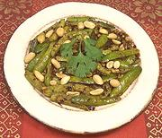

|
Tindora Fry #2(Dry Curry)India | ||||
| Serves: Effort: Sched: DoAhead: |
4 side ** 30 min Yes |
This recipe is a little intense for a main dish but makes a good accent side. Also known as "ivy gourd", this tiny gourd is popular all over India. It is usually eaten while still green (it turns red inside as it ripens). | |||
|
1 1/4 1 4 1-1/2 2 1 10 1/4 1/2 2 --- |
# t t T T t t t T -- |
Tindora (1) Oil Cumin Seeds Chili, dry (2) Peanuts (3) Oil Mustard seed Curry Leaves (3) Turmeric Salt Water -- Garnish Roasted Peanuts |
Do Ahead - (20 min)
|
isv_tindora2 071003 inet - www.clovegarden.com
©Andrew Grygus - agryg@aaxnet.com - Linking to and
non-commercial use of this page is permitted.